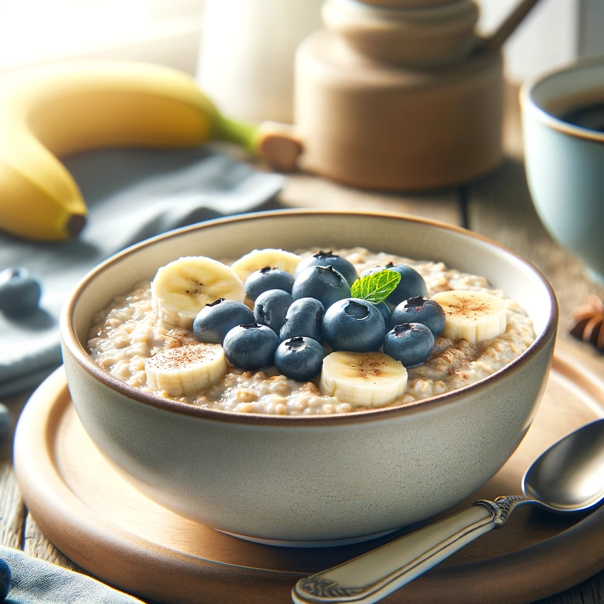

Banana and Blueberry Oatmeal

Description
The Banana and Blueberry Oatmeal is a warm, comforting breakfast dish that combines creamy oats with the natural sweetness of bananas and the tartness of fresh blueberries. This nutritious bowl is further enhanced with a hint of cinnamon and a drizzle of honey or maple syrup for added flavor. Perfect for starting your day with a healthy, filling meal, it's easy to make and can be customized with your favorite toppings for extra texture and nutrition.
Ingredients
- 1 cup rolled oats
- 2 cups water or milk (for creamier oatmeal, use milk)
- 1 ripe banana, sliced
- 1/2 cup blueberries (fresh or frozen)
- 1 tablespoon honey or maple syrup (optional)
- 1/2 teaspoon cinnamon (optional)
- Pinch of salt
Steps
- Prepare the Oatmeal:
In a medium saucepan, bring the 2 cups of water or milk to a boil. Add a pinch of salt.
Stir in the rolled oats and reduce the heat to a simmer. Cook, stirring occasionally, for about 5 minutes or until the oats have absorbed the liquid and are creamy.
- Add Flavors:
Once the oatmeal is nearly done, stir in the cinnamon and honey or maple syrup if using. This adds a lovely warmth and sweetness to the oatmeal.
- Incorporate Fruits:
Remove the saucepan from heat. Gently fold in the sliced banana and blueberries, reserving some for topping. The residual heat will slightly soften the fruits without making them mushy.
- Serve:
Spoon the oatmeal into a bowl. Top with the reserved slices of banana and a handful of blueberries for a fresh, colorful finish.
- Garnish (Optional):
For an extra touch, sprinkle a little more cinnamon, a drizzle of honey, or a few chopped nuts over the top for added texture and flavor.
Enjoy your hearty and healthy oatmeal breakfast, perfect for starting your day with a burst of energy and sweetness!